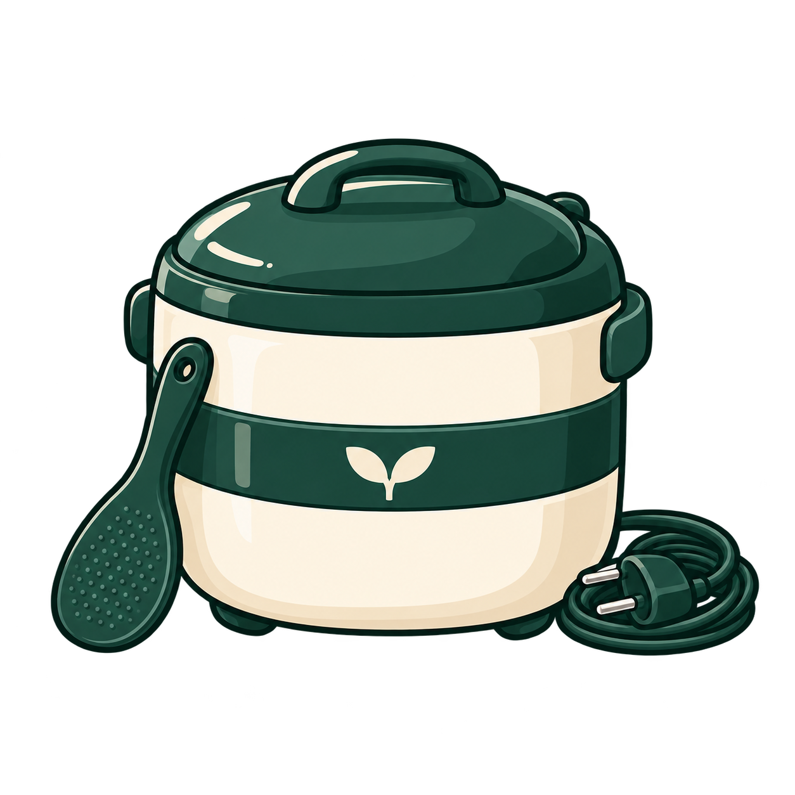
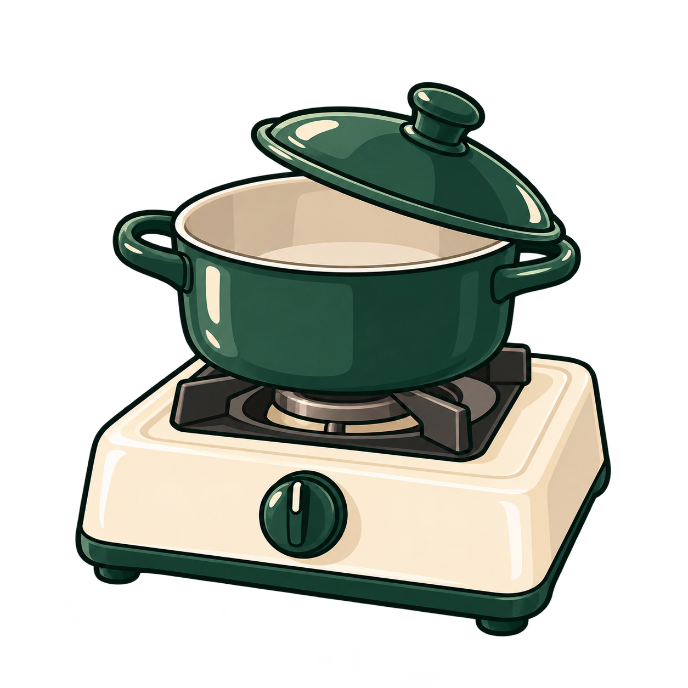
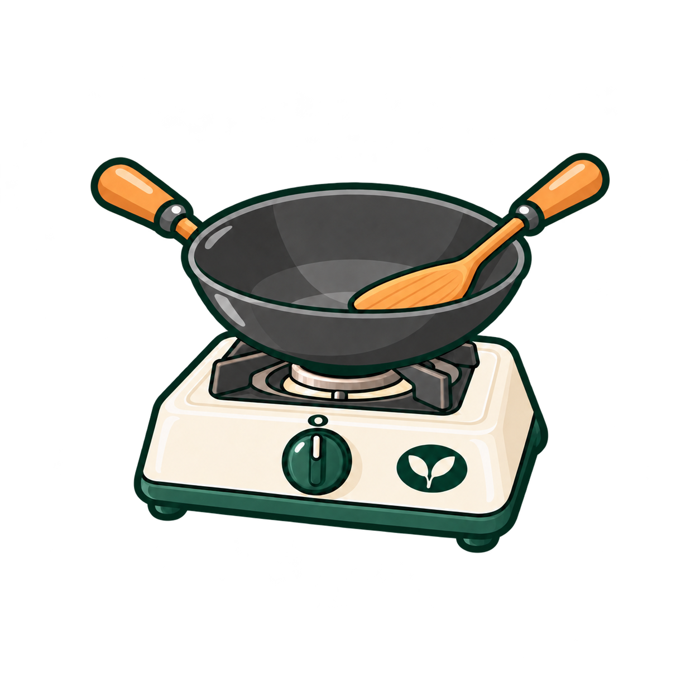
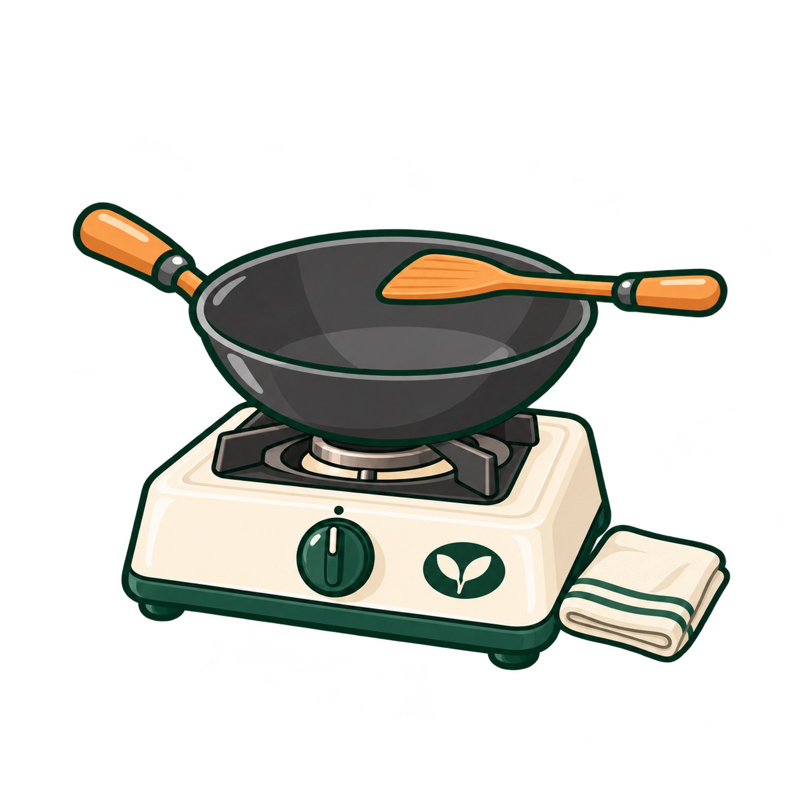
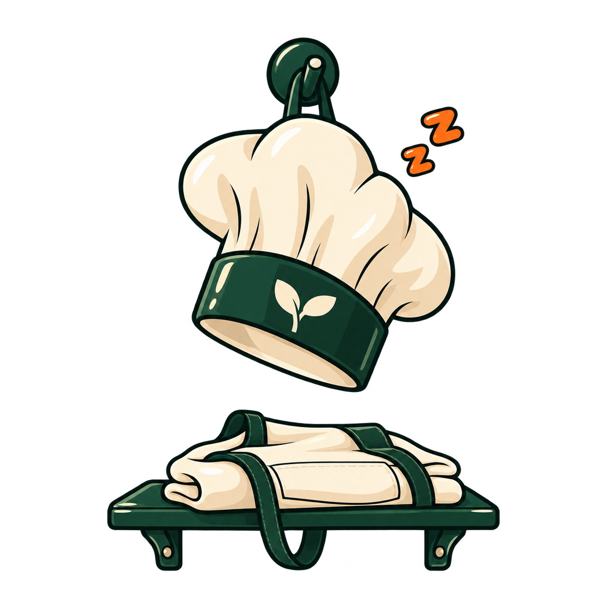

A · Order spike

Current asset · no orders.
A remains the current handoff asset. B, C and D are independently generated alternatives; click an image for the untouched PNG.
All three alternatives are 1254 × 1254 with real alpha transparency. Each has less than 10% margin on at least one side; originals are retained without resizing or padding. Detailed bounds are recorded below.
Current asset · no orders.
1254 × 1254 · transparent · matches B and the menu-card pencil style. At least 10% clear margin on all sides. Reviewed at 48 px. Generation record

Calm and tidy, unplugged, no steam.

No flame or steam.

1254 × 1254 · transparent · 74% canvas width · margins pass. Spatula blade inside the bowl; cream off line and dot aligned. No extras. Generation record

1254 × 1254 · transparent · reviewed at 48 px beside the active wok. No food, flame or steam. Framing deviation: visible group spans 83% of the canvas width; left/right margins are 115/102 px. Generation record

The kitchen is resting.
Prompts, native dimensions, alpha and margin checks · Full asset gallery